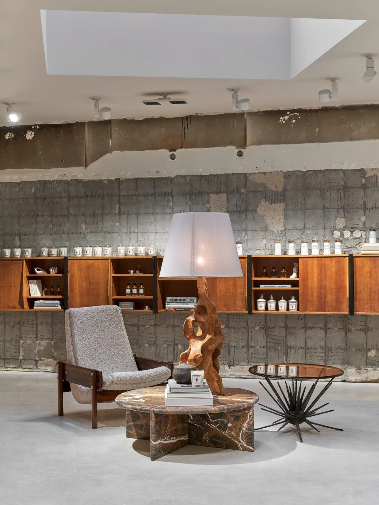

Vizí beauty concept storu Ingredients, společného projektu Jakuba Kopčáka a Lukáše Loskota, je od roku 2012 přinášet na český trh nekonvenční značky, jejichž produkty mají ve světě kultovní status. Nabídku niche parfémů a vonných svíček doplňuje sortiment přírodní pěsticí a dekorativní kosmetiky. Jak už sám název obchodu napovídá, společným jmenovatelem všech našich produktů jsou ingredience prvotřídní kvality. Parfémy obsahují ty nejvzácnější vonné esence zpracované tradičními postupy, od kterých už většina moderních výrobců vůní ustoupila pro jejich nákladnost.

Při výrobě svíček se používají bavlněné knoty a rostlinný vosk té nejvyšší kvality, zatímco pěsticí a dekorativní kosmetika využívá nejnovějších zelených technologií a obsahuje čisté a bioaktivní ingredience rostlinného původu. Výjimečnost sortimentu umocňuje interiér obchodu a úroveň servisu a znalostí o produktech. Vše, co děláme, děláme s vášní, o kterou se rádi dělíme s ostatními. Naše zákazníky nikdy nenutíme do nákupu. Možnost vyzkoušet si produkty před zakoupením v pohodlí domova prostřednictvím vzorků je od začátku nedílnou součástí naší filozofie. Naším přáním je, abyste byli se svým nákupem maximálně spokojeni.
Co je to niche?
Značky nesoucí označení „niche“ jsou velmi selektivní a od těch běžně dostupných se liší zejména kvalitou ingrediencí a originalitou. Niche značky mají opravdový příběh, za kterým nestojí tým marketingových specialistů, a své produkty tvoří s opravdovou vášní. Jejich hvězdami nejsou známé tváře, ale produkt samotný. Prostřednictvím niche parfémů si jejich tvůrci plní své sny o dokonalých vonných kompozicích bez kompromisů, které se nemusí podřizovat všeobecnému vkusu. Progresivní niche kosmetické značky zase využívají revolučních zelených technologií, které ještě před pár lety ani neexistovaly. Viditelných výsledků tak dosahují bez jediné kapky chemie. Niche produkty se nevyrábí sériově, nýbrž v malých várkách, tradičními postupy a s důrazem na kvalitu a ruční zpracování. Jejich distribuce je velmi limitovaná.